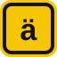

-
der die das 88 sustantivos, del español al alemán y al revés, y el artículo con colores: azul der, rojo die, verde das. Emden → Rügen
-

Verben 46 verbos, del español al alemán y del alemán al español. Aachen → Berlín -
Wörter 49 palabras pequeñas que salen en cada frase: noch, fast, gegenüber, geradeaus. Alemán, español o mezclado. Basel → Wien
El progreso se guarda en este navegador. Para pasarlo a otro dispositivo, usa la copia de seguridad de jorgellaneza.es.